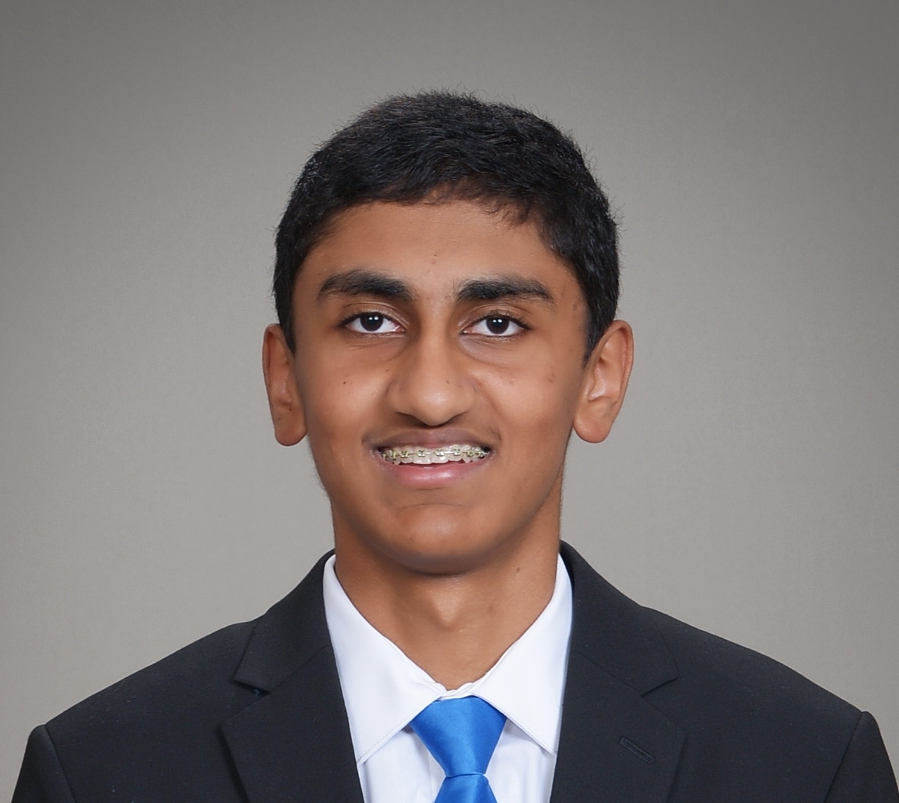

ATP Rankings Data Visualization / API
A Python and FastAPI project for exploring 50+ years of ATP singles rankings, with a SQLite database, web UI, REST API, and MCP support.

Online I go by "Jupiterian". I'm a high school student who likes computer science, CyberPatriot, and digging into real-world data sets. Lately I've been working a lot with ATP tennis rankings and building a web app and API around them.
I'm a high school student who spends a lot of time on CS, CyberPatriot, and random side portfolio. Most of what I work on is either related to security (locking things down, scripting checks) or to data (collecting, cleaning, and exploring it).
Outside of coding I like following sports, especially tennis, which is part of why I ended up building a whole portfolio around ATP rankings.
Through CyberAegis and the CyberPatriot competition, I've spent a lot of time hardening Windows systems and services. A big part of the competition for me is learning how to both fix damage that's already been done and prevent future problems from happening in the first place.
Over the last few seasons I've worked across many different parts of Windows security, always thinking in terms of threat remediation and prevention. That mindset has helped my teams do well:
More recently, I've also started putting together content to help middle school students get into cybersecurity and understand the basics of Windows hardening.

Here are a few things I've worked on recently. For more details, you can check the GitHub links or the dedicated portfolio pages.
A Python and FastAPI project for exploring 50+ years of ATP singles rankings, with a SQLite database, web UI, REST API, and MCP support.
Locking down Windows and Linux machines, running scripts to check for common issues, and learning how to think about security by doing competitions.
Small notebooks where I explore machine learning concepts and build simple models.
You can see more on my GitHub profile .
If you want to say hi, ask about the ATP portfolio, or share ideas, the easiest way to reach me is through GitHub or Devpost: